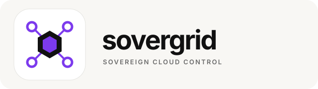
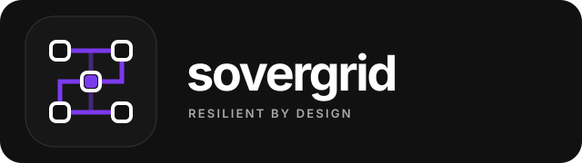

Each direction keeps the existing purple and neutral palette while expressing one control plane routing workloads across independent infrastructure providers.
Recommended: Distributed S
A continuous deployment route forms the letter S across independent provider nodes.

Distributed S animation
Providers appear sequentially while one route forms the complete symbol and activates its orchestration point.
Motion comparison
Compare all three formation animations
01 · Distributed S
A deployment route discovers and connects provider nodes.
02 · Sovereign Core
Independent providers connect inward and activate the orchestration core.

03 · Resilient Grid
Redundant routes form, a node fails, and the deployment signal continues.
Static comparison
Wordmarks and brand character
01 · Distributed S
Distinctive, product-specific, and recognizable at small sizes.
Recommended

02 · Sovereign Core
Stable, institutional, and focused on the central control plane.
Enterprise

03 · Resilient Grid
Technical, modular, and focused on redundancy and failover.
Developer-first
Testing suggestion: show people the three animations without naming your favorite. Ask which feels most trustworthy, most memorable, and most connected to multi-provider deployment. This produces more useful feedback than asking only which one looks best.